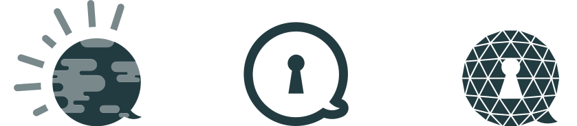
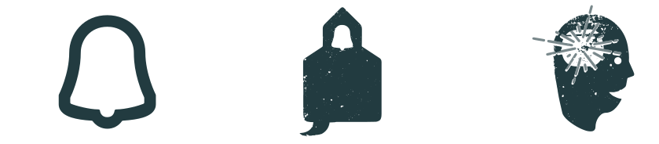
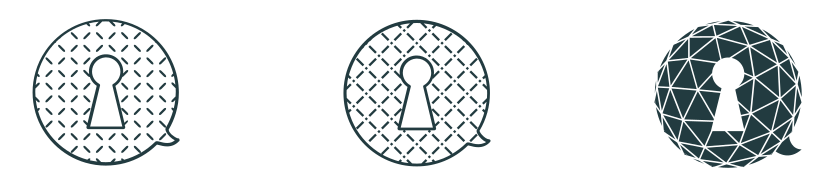
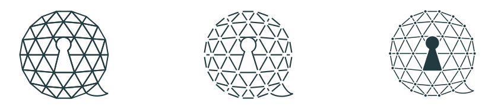

Branding | Indentity | Web Design
CSL is based in Chattanooga. Their mission is to create a more aware, educated and inclusive community through the teaching of language and culture. They are a small startup with huge aspirations and they've build a great community around them.
Language is such a huge part of how we understand our environment. It shapes our ideas and beliefs. It connects us to everything we see and expereience. It's the key to understandiing. CSL wanted a mark that reflected these characteristics.
Some of the ideas that first came to mind when I satred the project.


Once a direction was choosen I began to push the concept to encompass all the things CSL wanted to express as a brand. Ideas around being globally minded, providing connections, and opening doors for opportunity rose to the top.


Once a direction was choosen I began to push the concept to encompass all the things CSL wanted to express as a brand. Ideas around being globally minded, providing connections, and opening doors for opportunity rose to the top.